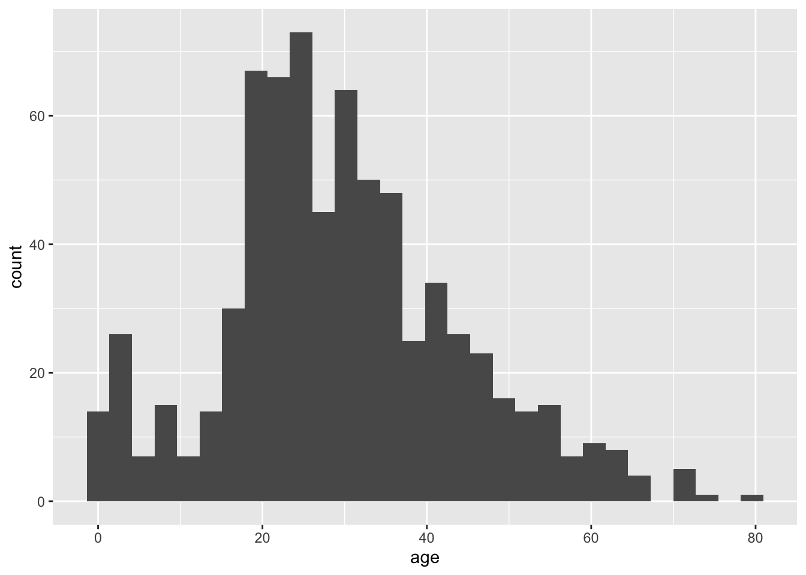
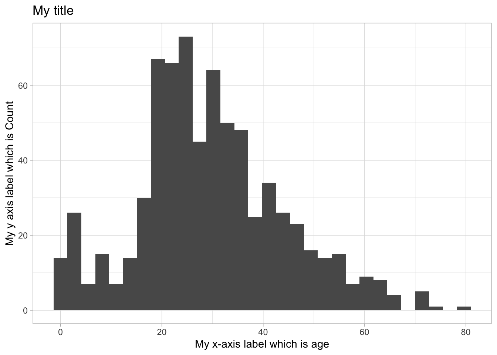
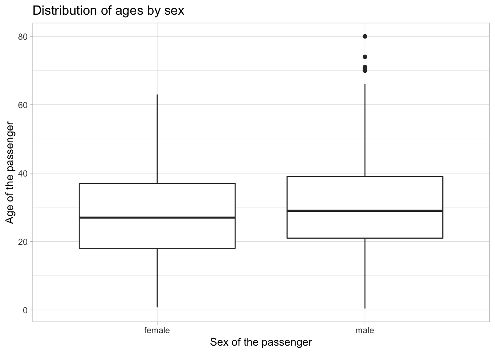
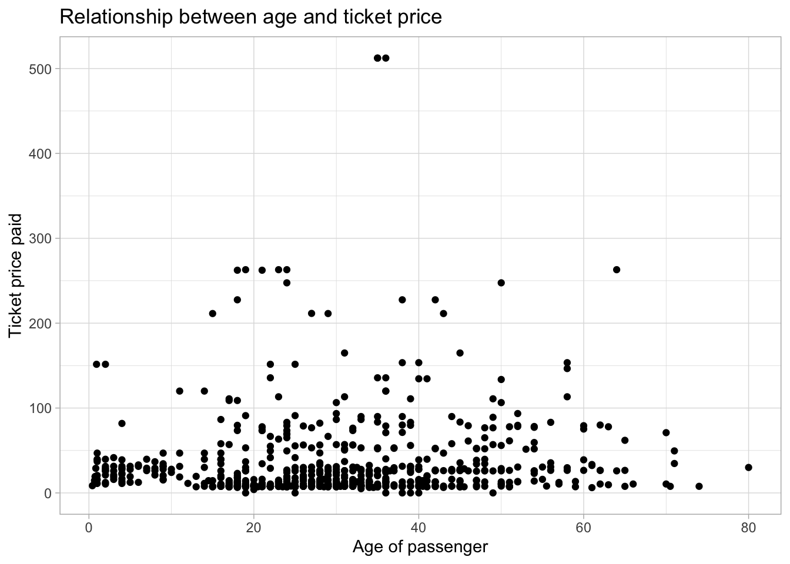
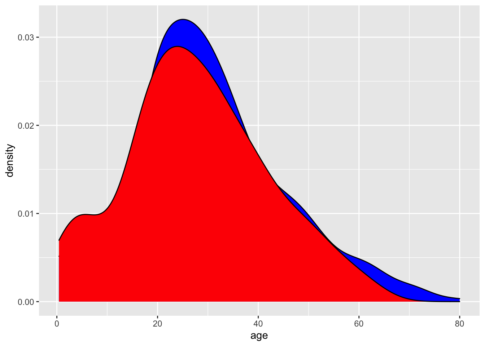
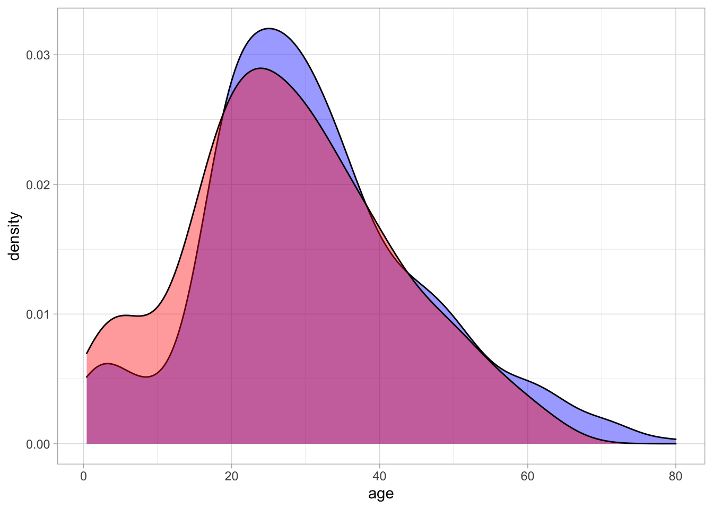
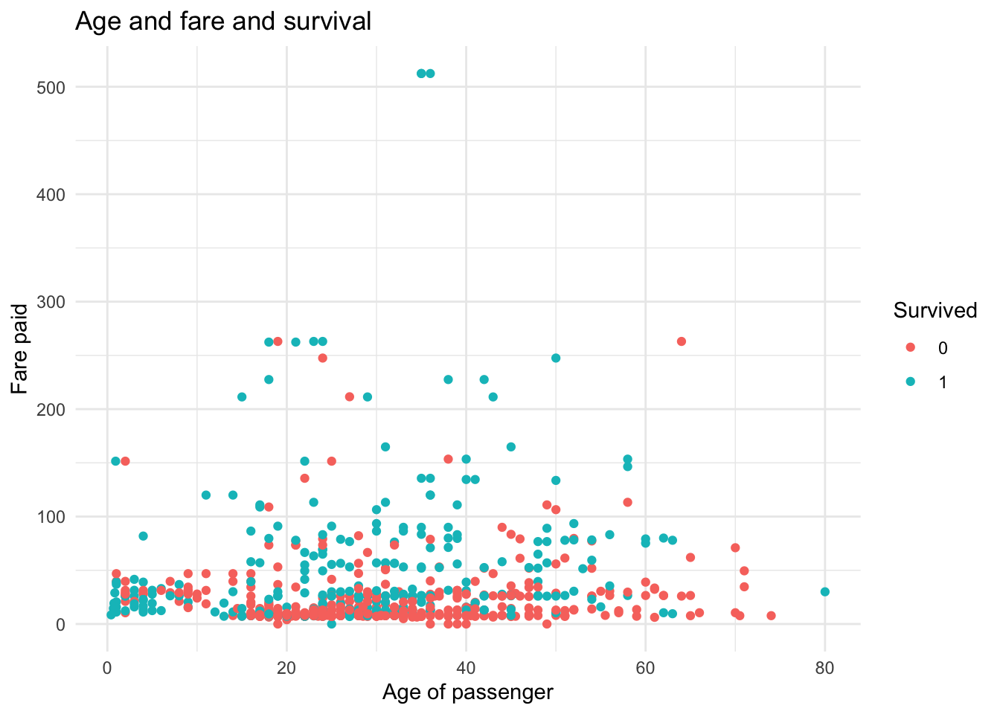

Chapter 9 Graphics with ggplot2
In this Guided Exercise, we will be focusing on visualization with an emphasis on using ggplot2. While the basic R plots have lower fixed costs to begin using, they are generally less customizable, less initially pretty, and do not work as well in the flow of the tidyverse package. On the other hand, ggplot2 has a logical flow to the graphics system. There is always a specific grammar that must be followed to make graphs, and once you understand it, making graphs becomes fun and (more or less) easy. In practice, you will learn that the essence of making graphs is Googling your questions. There is almost certainly an individual who has needed to make a graph similar to yours, and the R community has probably responded using ggplot2.
For this week, we will once again be working with the titanic_train data from the titanic package. As a reminder, this data set provides information on the fate of passengers on the fatal maiden voyage of the ocean liner “Titanic,” summarized according to economic status (class), sex, age, and survival. Here are some of the important columns:
Survived: binary variable equal to 1 if the passenger survivedPclass: the passenger’s classname: the passenger’s nameSex: the sex of the passengerAge: the age of the passengerFare: the price of the ticket the passenger paid
## loading in the data and packages
library(tidyverse)
library(titanic)
##loading in the data set and cleaning the names
titanic <- janitor::clean_names(titanic_train)9.1 The grammar of graphics
The most important aspect to understand in ggplot2 is the “grammar of graphics.” The ggplot2 package has its own syntax for making graphs. This syntax, while confusing at first, is extremely elegant when your graphics become more complicated. Let’s start off with the basic template for making graphics:
##The basic template
## This uses the titanic data set
## creates a histogram with the variable being the age column
ggplot(data = titanic, aes(x = age)) +
geom_histogram() ## `stat_bin()` using `bins = 30`. Pick better value with `binwidth`.## Warning: Removed 177 rows containing non-finite values (stat_bin).
There is a LOT to unpack here, so we will go through each component thoroughly:
- The
ggplotfunction tells R that we want to make aggplot2graphic. Theggplotfunction generally takes two arguments: the tibble you want to use in thedataargument, and theaesfunction. Theaesfunction stands for the “aesthetic mapping.” The purpose of this function is to tellggplot2what you want on your x and y axis. It will then take these inputs and “aesthetically map” them to the desired type of graph. - You should notice that there are addition signs (
+) between these two lines of code. These addition signs can be thought of as a pipe, but for graphics. Specifically, they tell the graph “and now add on this.” - The
geom_histogramfunction is a function that specifies we want to make a histogram. All graphs in theggplot2package begin with “geom” so that we can easily recognize that we are calling a specific type of graph. Other examples are a scatter plot (geom_point), density plot (geom_density), box-and-whisker plot (geom_boxplot), or a bar graph (geom_bar).
9.2 Adding options
As stated above, the + is essentially a %>%, but for graphics. It can be thought of verbally as “and now add this to the graph.” To demonstrate this, let’s use our histogram of the age column that we saw in the last section. Suppose we wanted to do the following:
- Edit the x axis with our own custom label
- Edit the y axis with our own custom label
- Add a title
- Make the default colors look better
This becomes rather simple to do in ggplot2 thanks to the grammar of graphics.
## creating the same plot as above except with a title, and edited axis
ggplot(data = titanic, aes(x = age)) + ## use the titanic tibble, map the age column to the graph
geom_histogram() + ## and now make a histogram of age
xlab("My x-axis label which is age") + ## and now label the x axis
ylab("My y axis label which is Count") + ## and now label the y axis
labs(title = "My title") +## and now label. the label I want is the title
theme_light() ## and now use this graphing theme to make it pretty## `stat_bin()` using `bins = 30`. Pick better value with `binwidth`.## Warning: Removed 177 rows containing non-finite values (stat_bin).
As specified in the comments, the way we would read this code is
- Make a ggplot object using the
titanictibble and mapageto the x-axis - And now add on a histogram
- And now add on a label the x axis with
xlab - And now add on a label the y axis with
ylabs - And now add on the graph a title with
labsand the title argument - And now use a color scheme that is more appealing with
theme_light
Let’s try to make a few other types of graphs. As mentioned earlier, graph types usually begin with the geom_ followed by the type of graph that it is. For instance, let’s make a box-and-whisker graph (also known as a box-plot) using the sex and age columns.
## making a box-and-whisker plot
ggplot(data = titanic, aes(x = sex, y = age)) + ## make a ggplot plot using the titanic data and map age and sex to x and y
geom_boxplot() + ## and now make a box plot with x axis sex and y axis age
xlab("Sex of the passenger") + ## and now label the x axis
ylab("Age of the passenger") + ## and now label the y axis
labs(title = "Distribution of ages by sex") + ## and now title the graph
theme_light() ## and now make the graph look prettier## Warning: Removed 177 rows containing non-finite values (stat_boxplot).
Now let’s make a scatter plot using the age and fare columns:
## making a scatter plot
ggplot(data = titanic, aes(x = age, y = fare)) + ## make a ggplot plot using the titanic dat
geom_point() + ## using age as x axis and fare as y axis
xlab("Age of passenger") + ## and now label the x axis
ylab("Ticket price paid") + ## and now label the y axis
labs(title = "Relationship between age and ticket price") + ## and now title the graph
theme_light() ## and now make the graph look prettier## Warning: Removed 177 rows containing missing values (geom_point).
As shown, it is incredibly simple to switch between different types of graphs. In fact, once you have a template of the certain options you like to add to your graph, you can simply change the geom_ to your desired graph type.
9.3 Adding multiple plots together
One of the main draws of ggplot2 is how simple it is to overlay graphs. For instance, suppose we want a plot that has two histograms, one for male age, and one for female age. We can easily do this by simply adding on a geom_histogram argument.
## making two histograms on one graph
ggplot(data = titanic, aes(x = age)) +
geom_density(data = titanic %>% filter(sex == "male")) +
geom_density(data = titanic %>% filter(sex == "female"))## Warning: Removed 124 rows containing non-finite values (stat_density).## Warning: Removed 53 rows containing non-finite values (stat_density).Notice that the geom_density told ggplot to create a density graph. Also notice something new: we added in a data argument to geom_density. This can be extremely useful when making multiple plots on the same graph. In our example, we told our first density graph to use the titanic data, but filter only the males. This shows how simple it is to add in tidyverse to ggplot!
Let’s make this graph a little “prettier.” Suppose we wanted to fill these density graphs with some color so we could tell the difference between them. To do this, we will use the fill argument that comes standard in each geom graph.
## making two histograms on one graph and adding color using the fill argument
ggplot(data = titanic, aes(x = age)) +
geom_density(data = titanic %>% filter(sex == "male"), fill = 'blue') +
geom_density(data = titanic %>% filter(sex == "female"), fill = 'red')## Warning: Removed 124 rows containing non-finite values (stat_density).## Warning: Removed 53 rows containing non-finite values (stat_density).
Of course, this isn’t so pretty since one of the densities is clearly over-powering the other. This is where another new argument alpha can help us. The alpha argument is simply a number between 0 and 1 which tells ggplot how transparent the color should be. Observe:
## making two histograms on one graph and adding color using the fill argument, and alpha argument
ggplot(data = titanic, aes(x = age)) +
geom_density(data = titanic %>% filter(sex == "male"), fill = 'blue', alpha = 0.4) +
geom_density(data = titanic %>% filter(sex == "female"), fill = 'red', alpha = 0.4) +
theme_light()## Warning: Removed 124 rows containing non-finite values (stat_density).## Warning: Removed 53 rows containing non-finite values (stat_density).
9.4 Creating legends
Legends are automatically created for you using the fill argument within the aesthetic mapping. For instance, suppose we wanted to create a graph similar to above with two densities of age: one for males and one for females. We can actually accomplish this in a more compact way by adding the fill argument to our aesthetic mapping. The fill argument within aes specifically tells ggplot that you want to separate this graph by a categorical variable.
## making two histograms on one graph and adding a legend using the fill argument
ggplot(data = titanic, aes(x = age, fill = sex)) +
geom_density(alpha = 0.4) +
xlab("Age") + ## and now add on an xlabel
ylab("Density") + ## and now add on a ylabel
labs(title = "Age by Sex", fill = "Sex of Passenger") + ## and now give the graph a title, and
# rename the fill argument to "Sex of Passenger"
theme_minimal() ## and now make the graph have pretty color scheme## Warning: Removed 177 rows containing non-finite values (stat_density).Notice that within the labs function, we added in another argument, fill. This fill will specifically label the fill you called in the aesthetic mapping (aes). This is beneficial so you can label your legend however you want. Omit the fill argument in the labs function and see what happens for yourself.
Let’s go through the “grammar of graphics” of this graph in plain English:
- Make a ggplot object and use the
titanictibble and map theagecolumn to the graph, but do two separate “fills” (e.g., versions of the graph), one for each category of sex. - And now add on a density plot
- And now add on a label the x axis with
xlab - And now add on a label the y axis with
ylabs - And now add on the graph a title with
labsand the title argument, and re-label thefillargument with the label “Sex of Passenger” - And now make the graph have default pretty colors with
theme_minimal
9.4.1 Exercise
- Create the following graph (HINT: use the
colorargument in the aesthetic mapping and turnsurvivedinto a factor usingas.factor):
